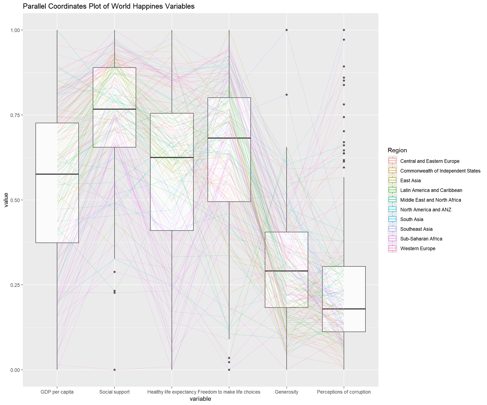

pacman::p_load(parallelPlot, GGally,tidyverse)05-4 Visual Multivariate Analysis with Parallel Coordinates Plot
1 Overview
Parallel coordinates plots are designed for visualising and analysing multivariate numerical data. They allow multiple variables to be compared at once and help reveal relationships, such as factors contributing to a Happiness Index. The technique was introduced by Alfred Inselberg in the 1970s and is more common in academic and scientific settings than business reporting. As Stephen Few (2006) notes, parallel coordinates are most effective as an interactive tool for uncovering multivariate patterns.
We will learn how to create static parallel coordinates plots using ggparcoord() from GGally, and interactive parallel coordinates plots using the parallelPlot package.
2 Installing and Loading the Required Libraries
There are 3 packages that will be used in this exercise.
| Package | Description |
|---|---|
| tidyverse | A collection of R packages for data importing, cleaning, transformation, and visualisation (e.g., readr, dplyr, tidyr, ggplot2). |
| GGally | A ggplot2 extension for tidy and simplified multivariate visualisation |
| parallelPlot | Creates interactive parallel coordinates plots. |
The code below installs and loads the required packages into R environment.
3 Data Preparation
3.1 The Data
In this hands on exercise, the World Happiness 2018 Report is used and downloaded from here. The original excel file is converted and saved as csv file and named WHData-2018.csv.
3.2 Importing the Data
The code below uses read_csv() from readr package to import the dataset into R environment It contains 156 observations.
wh <- read_csv("data/WHData-2018.csv")The preview table displays the first six records of the dataset. It contains 12 columns, where Country, Region are categorical variables, while the remaining columns are numeric variables of type double that describe Happiness score, such as GDP per capita, Dystopia, Social support, and Healthy life expectancy.
| Country | Region | Happiness score | Whisker-high | Whisker-low | Dystopia | GDP per capita | Social support | Healthy life expectancy | Freedom to make life choices | Generosity | Perceptions of corruption |
|---|---|---|---|---|---|---|---|---|---|---|---|
| Albania | Central and Eastern Europe | 4.586 | 4.695 | 4.477 | 1.462 | 0.916 | 0.817 | 0.790 | 0.419 | 0.149 | 0.032 |
| Bosnia and Herzegovina | Central and Eastern Europe | 5.129 | 5.224 | 5.035 | 1.883 | 0.915 | 1.078 | 0.758 | 0.280 | 0.216 | 0.000 |
| Bulgaria | Central and Eastern Europe | 4.933 | 5.022 | 4.844 | 1.219 | 1.054 | 1.515 | 0.712 | 0.359 | 0.064 | 0.009 |
| Croatia | Central and Eastern Europe | 5.321 | 5.398 | 5.244 | 1.769 | 1.115 | 1.161 | 0.737 | 0.380 | 0.120 | 0.039 |
| Czech Republic | Central and Eastern Europe | 6.711 | 6.783 | 6.639 | 2.494 | 1.233 | 1.489 | 0.854 | 0.543 | 0.064 | 0.034 |
| Estonia | Central and Eastern Europe | 5.739 | 5.815 | 5.663 | 1.457 | 1.200 | 1.532 | 0.737 | 0.553 | 0.086 | 0.174 |
4 Plotting Static Parallel Coordinates Plot
ggparcoord() from GGally package is used to create static arallel coordinates plot.
4.1 Key Arguments
data: the data.frame to plot.columns: which variables (names or indices) become the parallel axes.groupColumn: a variable (e.g. region) to colour (group) the lines by.scale: how to scale variables (e.g.,"std","uniminmax"(min 0, max 1),"globalminmax","robust").scaleSummary: summary statistic used when centring (scale = "center").centerObsID: observation to centre on whenscale = "centerObs".missing: how to handle missing values ("exclude","random", etc.).order: how to order the axes (can be a custom order or methods like"anyClass").showPoints: if TRUE, adds points at each variable value.splineFactor: whether to smooth lines using splines.alphaLines: transparency (or a column name for per-line alpha) for the lines ( 0 -1).boxplot/shadeBox: show boxplots or shaded ranges under each axis (TRUE or FALSE).mapping: additionalggplot2::aes()mappings passed to the plot.title: plot title.
4.2 Plotting a simple parallel coordinates plot
The code below creates a basic static parrallel coordinators plot based on columns 7 to 12.
ggparcoord(data = wh, columns = c(7:12))
4.3 Plotting a parallel coordinates with boxplot
The basic parallel coordinates plot did not provide a meaningful interpretation of the World Happiness indicators. Next we improve the plot but adding a range of arguments available in ggparcoord().
ggparcoord(data = wh, columns = c(7:12),
groupColumn = 2,
scale = "uniminmax",
alphaLines = 0.2,
boxplot = TRUE,
title = "Parallel Coordinates Plot of World Happines Variables")
5 Reference
Kam, Tin Seong (2026). 15 Visual Multivariate Analysis with Parallel Coordinates Plot R for Visual Analytics.